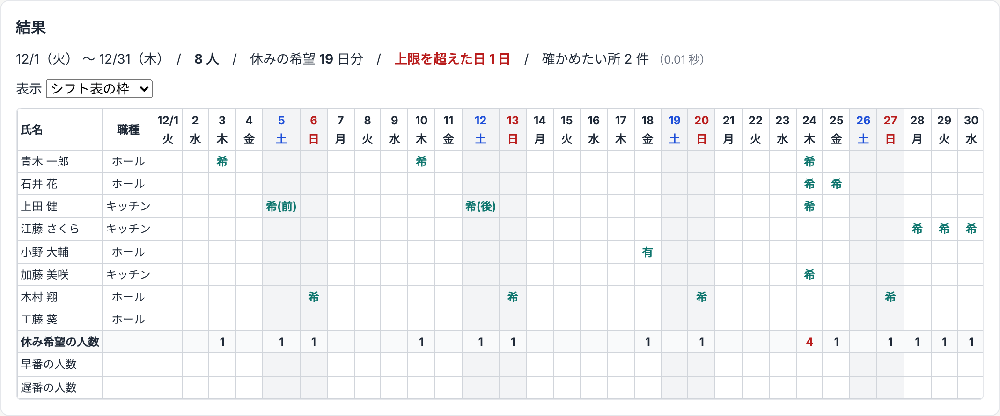
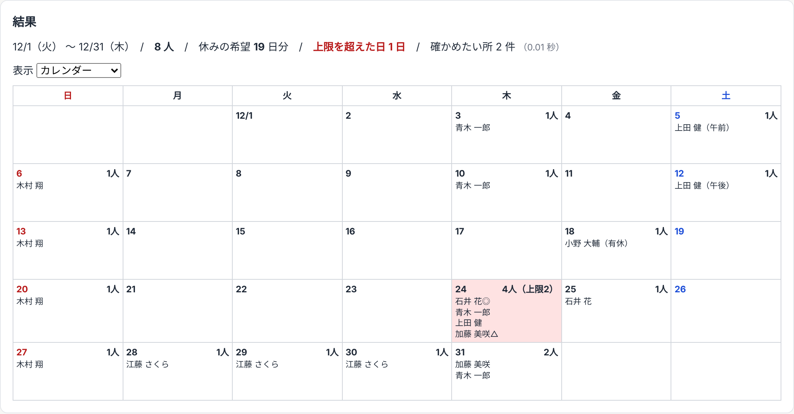

希望休の集計とシフト表の枠
飲食店・小売店・介護・学童など、毎月シフトを組む人のためのツールです。LINE やメモ、フォームで集めた休みの希望を貼り付けるだけで、日ごとにだれが休みたいか、休みが重なりすぎる日を一覧にし、希望休を書き込んだ来月のシフト表の枠を作ります。
- いろいろな集め方をそのまま読む：「青木：3, 10, 24日」「石井さん 12/24(木) ◎、12/25」「上田 12/5 午前」のような文、フォームの回答（名前と希望日の列）、名前×日付の表
- 日ごとの一覧とカレンダー：日ごとの希望の人数と名前、名簿があれば出勤できる人数。カレンダーの形でも見て印刷できます
- 重なり・偏りを知らせる：1日に休める人数（平日・土日祝で別々）、同じ職種で同じ日に休める人数、1人の希望の日数・土日祝の日数の上限を超えた所。希望が出ていない人も分かります
- 希望休入りのシフト表の枠：名前×日付の表に「希」「有」を書き込み、土日祝に色。A4 横で印刷、Excel（休みの日数・人数を数える式つき）・CSV で保存
ソフトのインストールは不要で、いつものブラウザで動きます。
500円（税込・買い切り）
お試し版はすべての機能を使えて、計算するのは先頭5人までです。決済が終わると、そのまま製品版の画面に移動します。ブックマークしておけば、毎月のシフトに何度でも使えます。


見本のデータ（架空の名前）で作った例です。
こんなときに
- 毎月、LINE で届いた休みの希望を見ながら、シフト表のマスに1つずつ書き写している
- 「24日に何人休みたいと言っているか」を、トークをさかのぼって数えている
- 先月の表をコピーして、日付と曜日、祝日の色を直してから組み始めている
- 希望を出していない人に、あとから気づく
読める書き方の例
青木：3, 10, 24日 石井さん 12/24(木) ◎、12/25 上田 12/5 午前・12/12 午後 江藤 12/28〜30 小野 有休 12/18 加藤 12/24 できれば、12/31 工藤 なし
- 日付は「3」「3日」「12/3」「12月3日(木)」「2026/12/3」。続きの日は「12/28〜30」「3日から5日」
- 「午前」「午後」は半日、「有休」は有休の希望、「◎」「必ず」は必ず休みたい日、「△」「できれば」はできれば休みたい日として読みます
- 名簿を入れておけば、「青木」だけでも名簿の「青木 一郎」として読みます（読み替えた名前は一覧で知らせます）
- 1か月の途中から始まる期間（16日〜翌月15日など）にも合わせられます。書かれた曜日が日付と合わないときや、期間の外の日付も知らせます
できること
- 読み込み：貼り付け、CSV（UTF-8・Shift_JIS）、Excel ファイル（.xlsx）。フォームの回答の CSV（「お名前」「休み希望日」などの列）、名前×日付の表（休みたい日のマスに印。「出勤できる日」の印は外せます）
- 表示と印刷：シフト表の枠（A4 横）、カレンダー（A4 横）、日ごとの一覧、1人ごとの一覧、確かめたい所
- 上限を超えた日の並べ方：◎（必ず）→ 印なし → △（できれば）、同じ印なら先に書かれた順。だれの希望を通すかは決めず、話し合いの材料として並べます
- 保存：Excel ファイルに「シフト表（式つき）」「日ごと」「1人ごと」「確かめたい所」「1行1件」の5シート。CSV はシフト表の枠と1行1件
- シフトを書き入れたあとの表は シフト表の集計と点検 で、出勤日数・勤務時間・連続勤務を数えられます
できないこと（購入前にご確認ください）
- シフトを自動で組むことはしません。休みの希望をまとめて、枠を作るところまでです
- 希望を集めること（LINE やフォームへの送信・受信）はしません。届いた文や回答を貼り付けてお使いください
- 有休の日数の管理や、休みの取り方が法律・就業規則に合っているかの判断はしません
- 文の書き方によっては読めないことがあります（読めなかった行は一覧にします）。「来週の月曜」「第2土曜」のような書き方は読みません
- Excel の色（土日祝）は付きません。色は画面と印刷で付きます
- スマートフォンでは操作しにくいため、パソコンでお使いください
Excel だけで数えるなら
名前×日付の表に休みの希望を「希」と書いているなら、日ごとの人数は B2:B20 がその日の列として =COUNTIF(B2:B20,"希*")、1人の日数は =COUNTIF(B2:AF2,"希*") で数えられます（「*」を付けると「希(前)」も数えます）。上限を超えた日に色を付けるには、人数の行を選んで「条件付き書式」→「セルの強調表示ルール」→「指定の値より大きい」で上限の数を入れます。
手作業で大変なのは、LINE やメモの文から表のマスへ書き写すところです。このツールは文のまま読み込んで、名前と日付を表に入れます。
よくある質問
| データはどこかに送られますか？ | 送られません。読み込み・計算・印刷・保存はすべてお使いのブラウザの中で行います。上限の数字・表題などの設定だけをブラウザに保存し、名簿や希望の中身は保存しません。 |
|---|---|
| 名簿は必要ですか？ | なくても使えます（書かれた順に並べます）。名簿を入れると、その順でシフト表の枠を作り、出勤できる人数と、希望が出ていない人が分かります。名簿だけを入れて、希望休のない枠を作ることもできます。 |
| 同じ人が2回書いたら？ | 1人にまとめ、同じ日は1日として数えます（まとめたことを一覧で知らせます）。 |
| 何人まで使えますか？ | 製品版は人数の制限はありません（300人分の文の読み込みと集計を、手元のパソコンで0.1秒かからずに終えることを確かめています）。 |
安心してお使いいただくために
- データはお使いのブラウザの中だけで処理し、サーバーには送信しません
- 動作環境：最新版の Chrome・Safari・Edge・Firefox（パソコン）
- 説明どおりに動かない場合は、ご購入から7日以内にご連絡いただければ返金します
組んだシフトの点検には シフト表の集計と点検、時間帯ごとの人数には 時間帯ごとの人数と不足チェック、祝日入りの年間カレンダーには 年間営業カレンダー もあります。